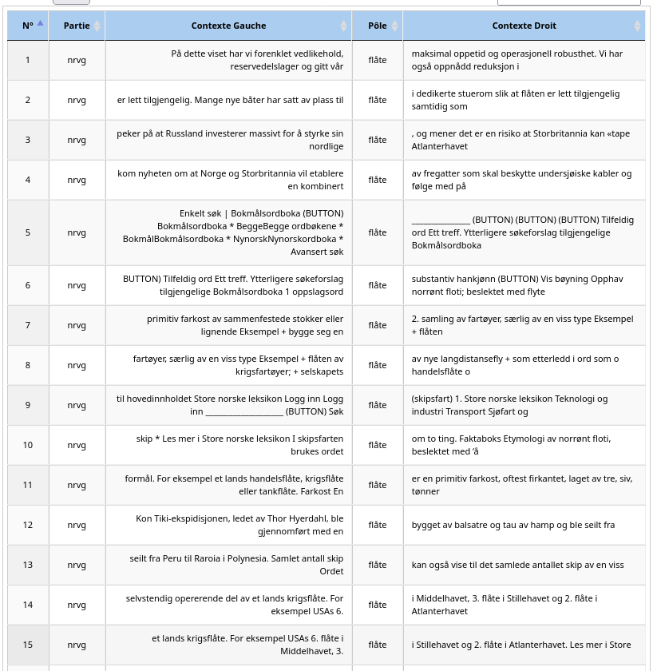

Analyse : Norvégien
Étude des contextes et spécificités du mot "Flåte".

Interprétation
Avant de commencer l’analyse linguistique du mot flåte en norvégien, il est nécessaire de prendre en compte la morphologie de cette langue. Le norvégien repose sur un système morphologique flexionnel dans lequel les noms communs portent les marques de nombre et de définitude au moyen de suffixes.
Le mot flåte présente ainsi plusieurs formes morphologiques : flåte correspond au lemme, c’est-à-dire à la forme du singulier indéfini, généralement utilisée dans les définitions ou les descriptions. La forme flåten correspond au singulier défini (« la flotte »). Flåter est la forme du pluriel indéfini (« des flottes »), tandis que flåtene correspond au pluriel défini (« les flottes »).
Ces différentes formes jouent un rôle important dans l’analyse en contexte, car elles ne sont pas employées dans les mêmes environnements linguistiques.
Une problématique se pose alors pour l’analyse : si l’on se limite à l’étude de la seule forme flåte, une part importante des occurrences risque de ne pas être prise en compte. En effet, les usages les plus fréquents du mot apparaissent souvent sous ses formes fléchies, notamment flåten, flåter et flåtene.
L’outil Itrameur permet d’identifier et de visualiser l’ensemble de ces formes au sein du corpus. Les résultats sont présentés dans le tableau dédié à l’analyse norvégienne.